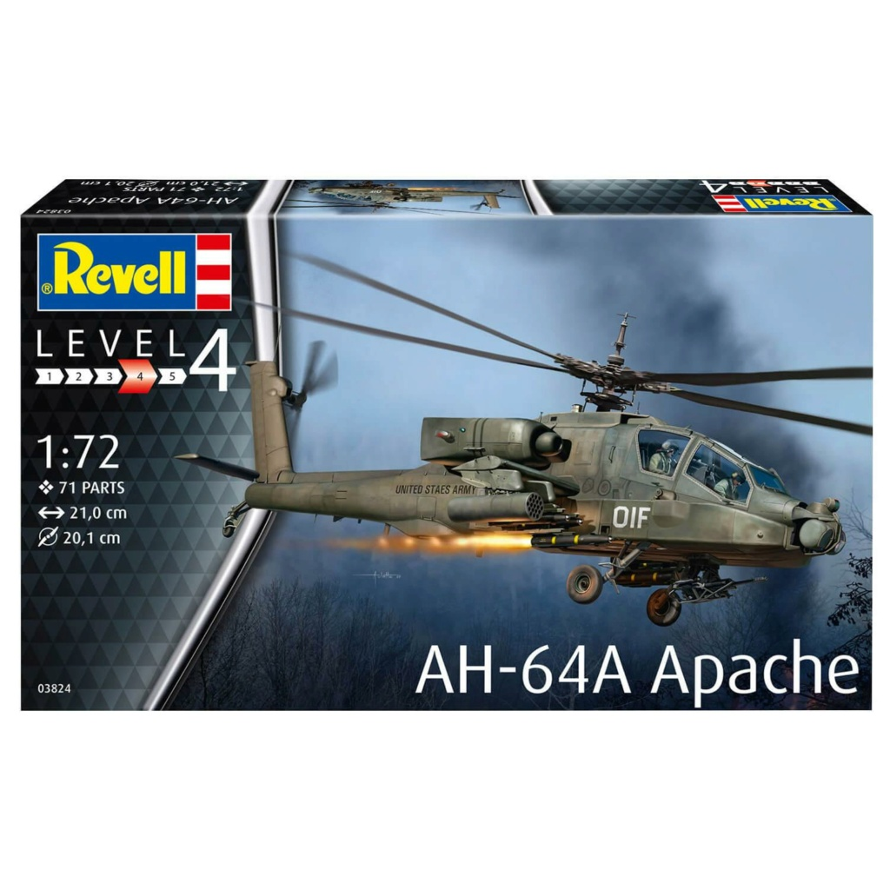
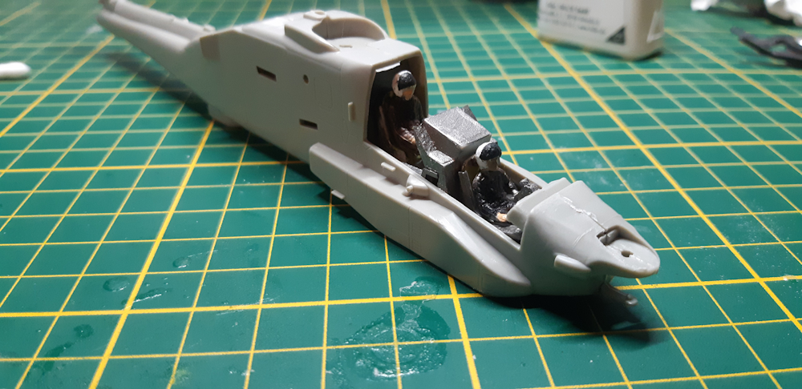
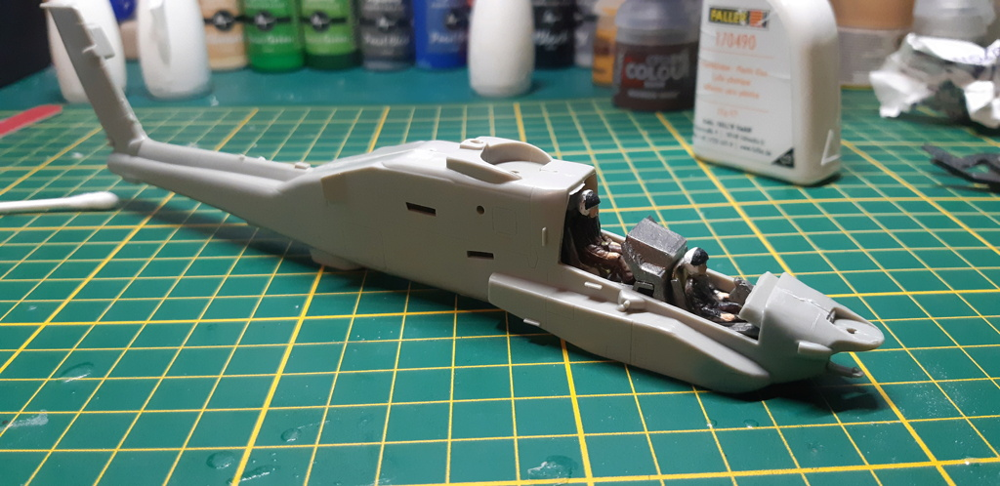
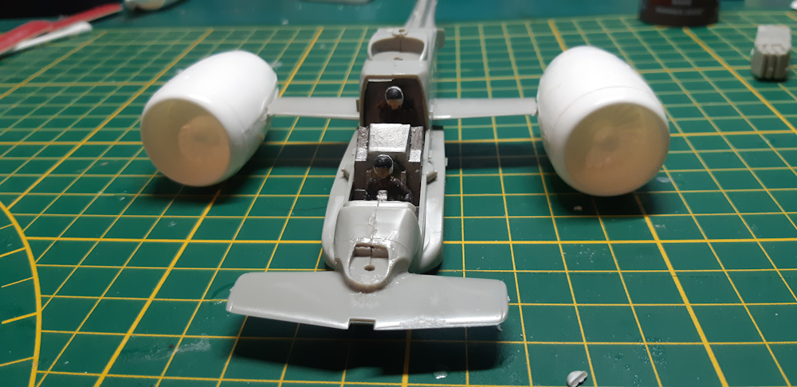
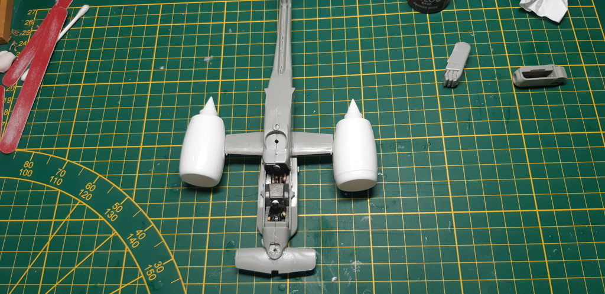
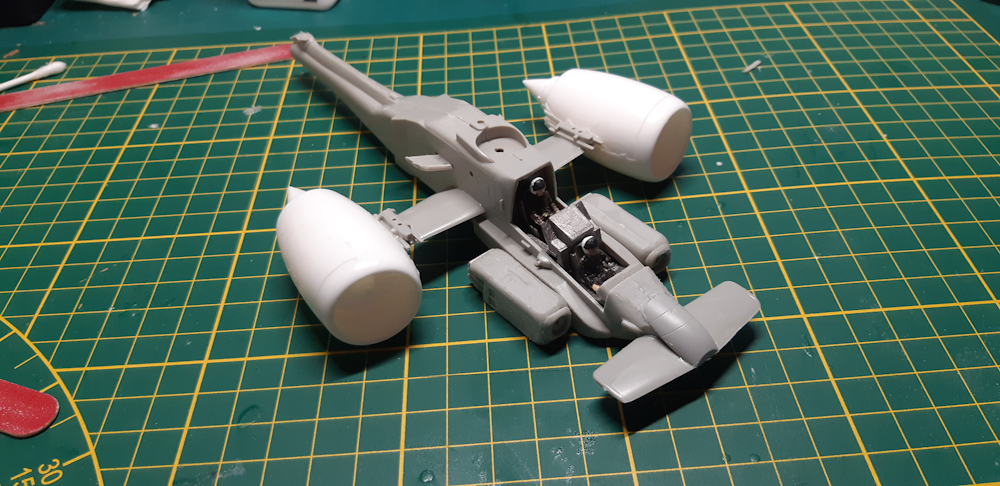
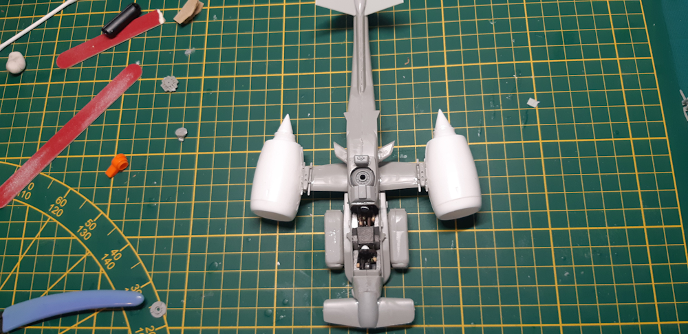
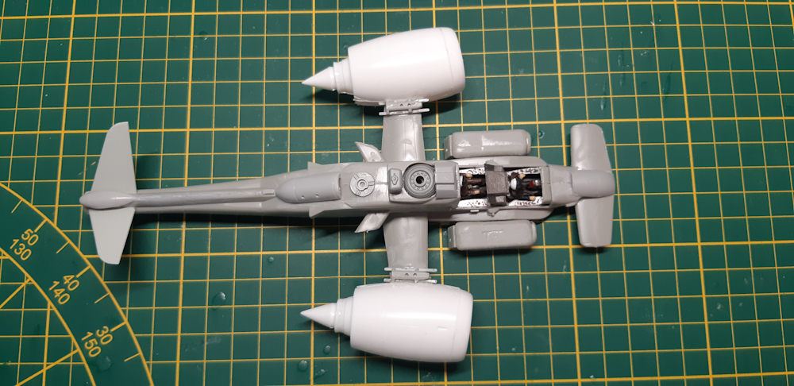
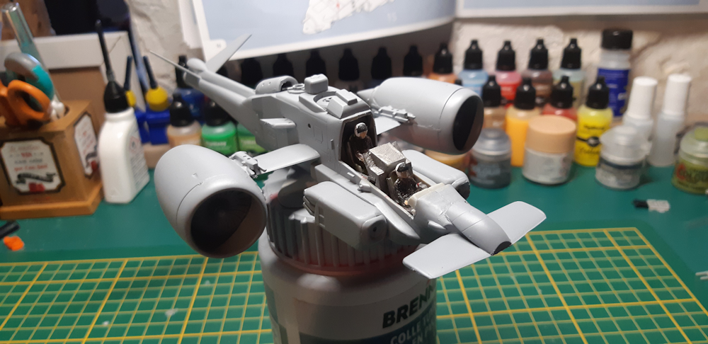
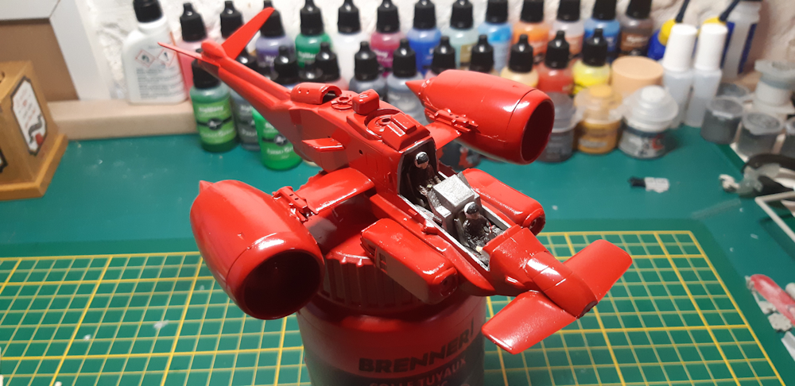

Le dock spatial a besoin d' un véhicule d' un véhicule de secours suite aux nombreux accidents qui naturellement auraient put être évités si les mécanos n'étaient pas aussi étourdis. Je pars donc sur une maquette d' apache AH-64A.

Montage du cockpit et des pilotes suivis de la peinture


Bon, dans la réalité, question peinture, ça fait propre mais vu de très près ça fait très dégueulasse qu' il est crado le maquetto ! Shocked Mais je suis satisfait, d' autant plus avec mes soucis de bras, d' arriver à ce résultat. ( Rhooooo le mec qui se trouve des excuses ) Montage des ailes et montage des réacteurs cannibalisé sur ceux d' un Boeing comme promis et je récupère l' aileron arrière de l' apache qui devient un aileron avant. Et là, une galère sans nom... Pour le placer mais bon, à force de s' acharner, j' y arrive !!! Mise en place à blanc


Dans l' ensemble pas trop mal sauf la jointure sur la queue de l' hélico où un petit jour s' est fait mais bon vu que je vais ajouter des trucs, ça devrait le faire, pas envie de sortir le mastic... Réacteurs fixés. J' ai repris les côtés carrés de l' Apache et les aient placés le long du cockpit. Placé 2 petites ailettes le long du corps. Mise en place d' un petit bouclier sur l' aileron avant et découpe de la poutre de queue.

Et mise en place de deux ailes à l' arrière au bout de cette dernière. Ajout de quelques accessoires ci et là...

L' engin est sorti de la chaine de montage

Direction atelier peinture pour le passage de l' apprêt. La cabine a été protégée avec de la patafix pour cette étape.

Maintenant le choix de la couleur de base : Ce sera rouge comme pour les sauveteurs. Passage de la couche de base. Et je laisse ainsi, pas de vieillissement ni d' insignes. Un véhicule d' intervention local.
